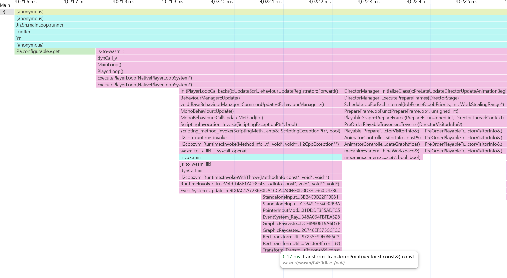
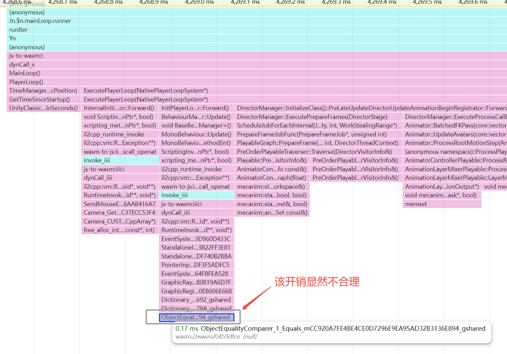
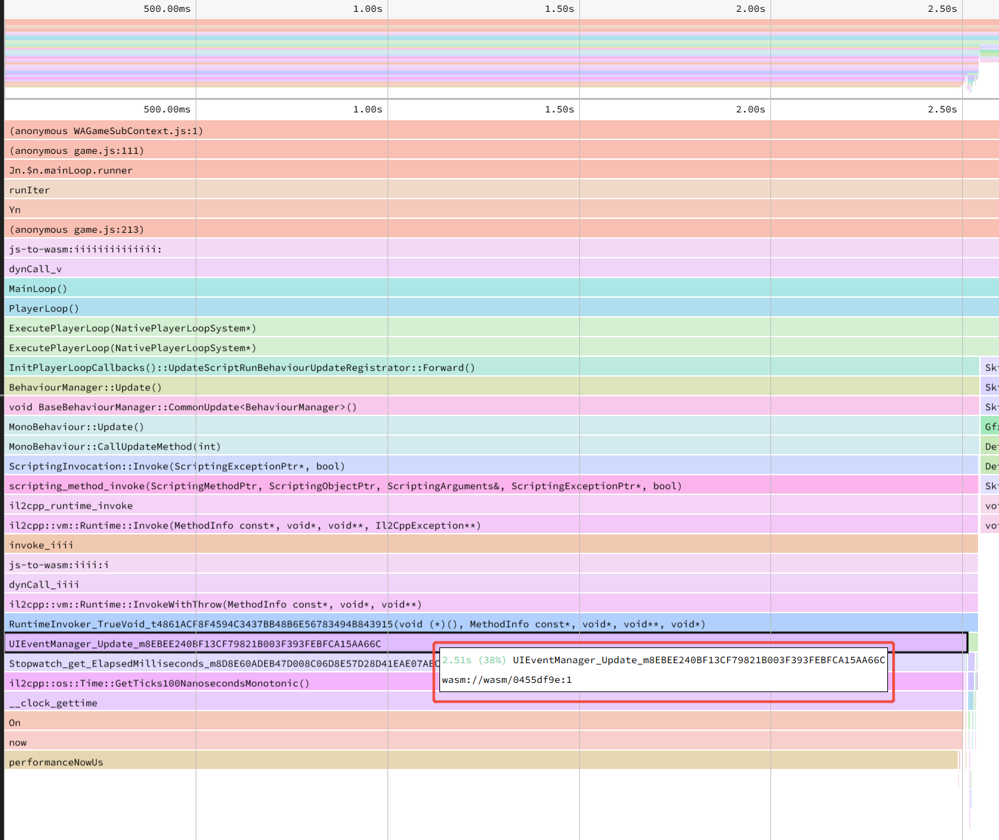

背景说明
微信小游戏提供了基于Android CPU Profiler的功能，该功能允许在固定频率下对函数栈进行采样，并生成相应的Timeline火焰图。

在火焰图中，每次函数栈采样会被统计为0.17ms的开销，从而定位性能热点。然而，由于该功能基于采样，难以避免偶然性问题。例如，某个函数的实际执行时间可能远低于0.17ms，但某次采样恰好捕获到该函数，导致其开销被误判为0.17ms。

此外，这种视图下，帧与帧之间的Profile结果可能存在较大偏差，进一步扩大了误差范围。这对微信小游戏的性能优化工作带来了一定干扰。
方法思路
该问题的本质是低频稀疏事件在固定间隔采样下的统计高估现象。解决方案可以从以下三个方向考虑：
提高采样频率：
- 代价：采样开销增加，数据量爆炸，不现实。
结合插桩（Instrumentation）：
- 在关键函数中插入计时代码，直接测量函数开销，消除采样误差。
- 代价：代码侵入性强，额外性能开销，且仅适用于已知函数，不现实。
统计校正：
- 若已知函数调用次数
N，可通过统计数学方法进行校正。 - 例如，基于SpeedScope的Left Heavy功能，可以获取函数采样的总耗时。
- 若能通过某种方式获取调用次数
N，即可最大程度消除统计偏差。
- 若已知函数调用次数
实现细节
固定帧开销
我们添加一个MonoBehaviour脚本，在Update函数中执行固定时间开销的运算，代码如下：
1 | // Update函数每帧调用一次 |
需要注意的是，Web环境下默认时间精度为1ms，容易引入误差。因此，我们需要启用高精度时间功能。在weapp-adapter.js中修改clientPerfAdapter如下：
1 | const clientPerfAdapter = Object.assign({}, { |
数据分析
在安卓真机测试中采集.cpuprofile文件后，使用SpeedScope的Left Heavy页面可以获取Update函数的总调用时间。

假设我们需要分析Animator::BatchedIKPass的开销，由于Update函数的每帧执行时间是稳定的，可以列出以下方程：
$$ \frac {UIEventManager.Update}{Animator.BatchedIKPass} = \frac{10ms}{x_{batchedikpass}} $$
解得 $x_{batchedikpass} = 4.1$ms。
通过这种方式，我们可以在采样Profiling体系下获取目标函数的平均开销，同时避免单帧数据的偶然性。